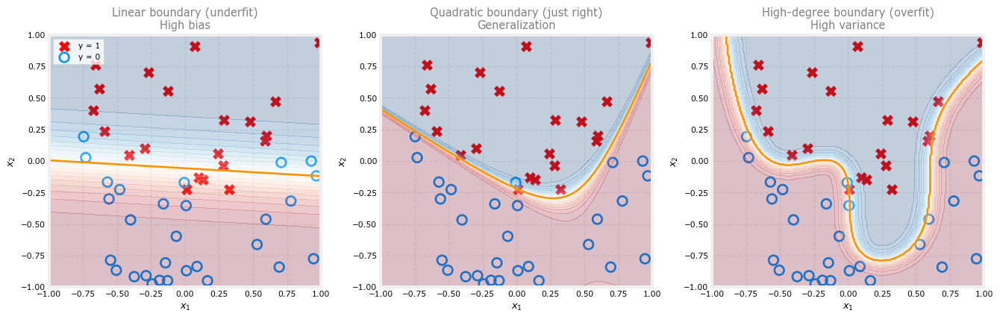

The Problem of Overfitting
machine-learning
supervised-learning
You have now seen linear regression and logistic regression. Both work well on many tasks. Sometimes, though, a model can overfit the training data and…
You have now seen linear regression and logistic regression. Both work well on many tasks. Sometimes, though, a model can overfit the training data and perform poorly on new examples. This page explains overfitting and its close opposite, underfitting.
The next page will introduce regularization, a widely used technique for reducing overfitting. If you have taken the statistics course, you may already have seen overfitting and regularization in the context of polynomial models there.
Review Questions
1. What is the opposite problem to overfitting?
TipAnswer
Underfitting, where the model is too simple to capture the pattern in the training data.
Underfitting and Overfitting
A model can fail in two different ways.
- Underfitting means the model is too simple. It does not even fit the training set well.
- Overfitting means the model fits the training set almost too well, often by being overly complex. It may fail on new data.
In machine learning, people often pair these terms with bias and variance (different usage from “variance” in probability).
| Problem | Common paired term |
|---|---|
| Underfitting | High bias |
| Overfitting | High variance |
Review Questions
1. If a model has high variance, is it more likely to be underfitting or overfitting?
TipAnswer
Overfitting. High variance means small changes in the training data can lead to large changes in the fitted model.
Housing Prices Example
To make these ideas concrete, return to predicting house prices with linear regression. The input \(x\) is house size. The target \(y\) is price.
Suppose you have only five training examples. The scatter below shows size on the horizontal axis and price on the vertical axis. As size grows, prices rise at first and then flatten out.
Three models below use the same five points.
- Linear (one feature \(x\))
- Quadratic (features \(x\) and \(x^2\)), as in polynomial regression
- Fourth-order polynomial (features \(x, x^2, x^3, x^4\))
Underfitting (High Bias)
The linear model on the left is too rigid. It assumes price grows steadily with size, but the data flatten. The straight line misses the pattern in the training set.
This is underfitting, also called high bias. The model has a strong preconception (prices must be a straight-line function of size) even though the data suggest otherwise.
You may have read news stories about machine learning systems showing unfair bias against certain groups. Checking models for that kind of bias is essential. Here, high bias means a technical underfitting problem, not fairness. The word bias has both meanings in machine learning.
Generalization
Real estate agents care about prices on new houses, not only the five houses in the training set. You want the model to do well on examples it has never seen. That ability is called generalization.
The quadratic model in the middle fits the training points reasonably well without becoming too wiggly. It is a plausible model for new houses of similar size.
Overfitting (High Variance)
The fourth-order curve on the right passes through all five training points almost perfectly. Training error can be driven very close to zero.
But the curve is wiggly. For some sizes, it predicts a larger house is cheaper than a smaller one, which is not reasonable. The model memorized the training points instead of learning a smooth trend.
This is overfitting, also called high variance. If the training set changed slightly (one house priced a little higher or lower), the fitted curve could change a lot. That sensitivity is why people say the model has high variance.
The statistics course shows the same pattern with higher-degree polynomials. Complex models can achieve very low training loss yet fail on new data. That is the overfitting problem in a nutshell.
Review Questions
1. Why can a fourth-order polynomial have training MSE near zero on only five points?
TipAnswer
With enough parameters, the model can bend enough to pass through every training point. That does not mean it will predict well on new houses.
1. Which model in the plot is most likely to generalize well to new houses?
TipAnswer
The quadratic model in the middle. It captures the flattening trend without being too wiggly.
Goldilocks Analogy
Think of the children’s story Goldilocks and the Three Bears.
- One bowl of porridge is too cold (underfit, high bias).
- Another is too hot (overfit, high variance).
- One is just right in the middle.
Your goal in machine learning is similar. You want a model that is neither too simple nor too complex.
- Too few features (like the linear model) can underfit.
- Too many features (like the fourth-order polynomial) can overfit.
- A middle complexity (like quadratic features \(x\) and \(x^2\)) is often a good starting point.
Review Questions
1. In the housing example, what feature setup matches the “just right” bowl of porridge?
TipAnswer
Using quadratic features (\(x\) and \(x^2\)), which fits the flattening curve without being too wiggly.
Classification Example
Overfitting is not limited to regression. It appears in classification too.
Suppose you classify tumors as malignant (\(y = 1\), red X) or benign (\(y = 0\), blue circle) using two features.
- \(x_1\) might be tumor size
- \(x_2\) might be patient age
Three logistic regression models use different feature sets.
- Linear features only (\(x_1\), \(x_2\)) give a straight decision boundary.
- Quadratic features (including \(x_1^2\), \(x_2^2\), \(x_1 x_2\)) can bend the boundary into an ellipse-like shape.
- A high-degree polynomial feature map lets the boundary twist to fit every training point.

The linear boundary on the left is not terrible, but it does not separate the clusters well. This is underfitting (high bias).
The quadratic boundary in the middle misclassifies a few training points but follows a smooth shape that should generalize to new patients.
The high-degree boundary on the right can contort itself to classify every training example correctly. That looks like strong training performance, but the boundary is overly complex for tumor size and age alone. This is overfitting (high variance).
Recall from logistic regression that with only original features \(x_1, x_2\), the decision boundary is linear. Polynomial features let it bend, which helps until you add so many terms that the model starts to memorize noise.
Review Questions
1. True or false? With only features \(x_1\) and \(x_2\), logistic regression always has a linear decision boundary.
TipAnswer
True for the original features. To get curved boundaries you need nonlinear feature terms (such as \(x_1^2\) or \(x_1 x_2\)).
1. Why might perfect accuracy on the training set still be a bad sign?
TipAnswer
The model may be overfitting, fitting noise or quirks of the training set instead of a pattern that generalizes to new patients.
1. You fit logistic regression with polynomial features to a dataset, and the decision boundary looks like the high-degree (overfit) panel in the classification plots above. What would you conclude?
The model has high variance (overfit). Thus, adding data is, by itself, unlikely to help much.
The model has high variance (overfit). Thus, adding data is likely to help.
The model has high bias (underfit). Thus, adding data is, by itself, unlikely to help much.
The model has high bias (underfit). Thus, adding data is likely to help.
TipAnswer
b. The boundary is overly complex and fits the training set too closely, which is high variance (overfit). When overfitting is the main problem, collecting more training examples often helps the model learn a smoother pattern.
Goal
The goal is a model that is just right.
- Not underfitting (high bias)
- Not overfitting (high variance)
In practice you judge this by training error and performance on data the model did not see during training (a validation or test set).
Later in this specialization you will learn tools for debugging learning algorithms and recognizing when overfitting or underfitting is happening. For now, suppose you fit a model and it has high variance (it overfits). What can you do?
Addressing Overfitting
Return to the degree-4 housing curve from earlier. It bends sharply to hit every training point. One way to tame that wiggly curve is to give the learning algorithm more examples.
More Training Data
The number one tool against overfitting, when you can use it, is to collect more training data.
If you can record more house sales (more sizes and prices), the algorithm can still fit a flexible model (high-degree polynomial or many features), but with enough examples it will tend to learn a smoother trend instead of memorizing noise.
More data is not always possible. In a small neighborhood, only so many houses may have sold recently. When additional data is available, though, it often works very well.
Fewer Features
A second option is to use fewer features.
In the housing example, the overfit model used \(x\), \(x^2\), \(x^3\), and \(x^4\). You could drop the highest-degree terms and keep only \(x\) and \(x^2\), as in the polynomial regression section.
Now imagine a richer data set with many input features per house, such as size, number of bedrooms, number of floors, age, average neighborhood income, and distance to the nearest coffee shop. If you have 100 features but only a modest number of training examples, the model may overfit.
Instead of using all 100 features, you might keep a smaller subset that seems most relevant, such as size, bedrooms, and age. Picking the most useful features is sometimes called feature selection. You can use domain intuition, or later you will see algorithms that help choose features automatically.
Feature selection has a trade-off. Dropping features throws away information. Perhaps all 100 inputs are genuinely useful for price prediction, and you do not want to discard them lightly.
Regularization (Preview)
The third option is regularization, which the next page develops in full. If you have seen \(L_2\) regularization in the statistics course, you already have a head start.
Look again at an overfit polynomial model with features \(x\), \(x^2\), \(x^3\), \(x^4\), and so on. The fitted weights \(w_1, w_2, \ldots\) are often large. Dropping the \(x^4\) term means setting \(w_4 = 0\), which is the same as eliminating that feature entirely.
Regularization takes a gentler approach. It encourages the algorithm to shrink the weights without forcing them to be exactly zero. Even with high-degree terms present, smaller \(w_j\) values produce a less wiggly curve that may generalize better.
By convention, regularization usually penalizes \(w_1, w_2, \ldots, w_n\) but not the bias \(b\). In practice, whether you regularize \(b\) as well makes little difference.
Three Options Recap
When a model overfits, you can try the following.
- Collect more training data (best when feasible).
- Use fewer features (feature selection).
- Apply regularization to keep all features but limit how large their weights can grow.
Regularization is widely used in practice, including for neural networks later in this specialization. The next page shows how to add it to linear regression and logistic regression.
Review Questions
1. If you can obtain more labeled training examples, which overfitting remedy is usually the first choice?
TipAnswer
Collect more training data. More examples often let a flexible model learn a smoother pattern instead of fitting noise.
1. How is setting \(w_4 = 0\) in a polynomial model related to feature selection?
TipAnswer
It removes the \(x^4\) term from the model, which is equivalent to not using that feature.
1. What technique does the next page introduce in detail to address overfitting?
TipAnswer
Regularization, which penalizes large weights so the model stays flexible without overfitting as severely.
1. Our goal when creating a model is to be able to use the model to predict outcomes correctly for new examples. A model which does this is said to generalize well.
When a model fits the training data well but does not work well with new examples that are not in the training set, this is an example of:
Underfitting (high bias)
None of the above
Overfitting (high variance)
A model that generalizes well (neither high variance nor high bias)
TipAnswer
c. Overfitting (high variance). The model fits the training set closely but fails on new data. That is the opposite of generalizing well.
1. Which of the following is not one of the three main options for reducing overfitting discussed on this page?
Collect more training data
Use fewer features
Apply regularization
Increase the learning rate \(\alpha\) to converge faster
TipAnswer
d. The three options are more data, fewer features, and regularization. Changing the learning rate affects optimization speed, not overfitting directly.
1. Which of the following can address overfitting? (Select all that apply.)
Collect more training data
Apply regularization
Remove a random set of training examples
Select a subset of the more relevant features
TipAnswer
a, b, and d. More training data, regularization, and feature selection can all reduce overfitting. Removing a random subset of training examples does not help. You want more data or better-chosen features, not arbitrary deletions.
ImportantTwo changes from the original lab
The optional lab this section is based on is an interactive matplotlib widget. Two things changed (updated 2026-08-31).
overfit_example(False)was replaced by a browser-based tool. The original is a click-driven widget needing a live Python kernel; the equivalent here is written in Observable JavaScript and D3, with its own least-squares and logistic solvers.- A regularization bug in that solver was fixed. It added \(\lambda/m\) to an unaveraged \(X^{T}X\) diagonal, which under-regularizes by a factor of \(m\); it now adds \(\lambda\).
The degrees offered, the datasets, the \(\lambda\) choices and the underfitting and overfitting argument follow the lab.
Lab: Overfitting
Polynomial models can be powerful, but they are also easy to misuse. In this lab you will fit curves and decision boundaries at different degrees, watch underfitting and overfitting appear, and then try regularization (\(\lambda\)) as a remedy. The interactive plot runs in your browser (Observable JavaScript and D3), so you can experiment without writing a full training loop first.
Goals
In this lab, you will:
- fit regression and classification data at polynomial degrees 1 through 6
- see underfitting at low degree and overfitting at high degree
- add points and watch how outliers or extra examples change the fit
- turn regularization on and off (\(\lambda\)) and compare fits at the same degree
Tools
You will use the interactive plot below. It uses normalized polynomial features and fast solvers (normal equations for regression, gradient descent for classification), similar to the reference labs.
Explore Overfitting Interactively
The plot below lets you:
- switch between Regression and Categorical examples
- select the model degree (1 through 6)
- click Fit data to train a polynomial model on the current points
- click on the plot to add data (hold Shift while clicking in classification mode to add a blue \(y = 0\) point)
- click Reset to restore the original data set
Here are some things you should try:
- Fit with degree = 1 and note underfitting.
- Fit with degree = 6 and note overfitting.
- Tune the degree to find a fit that looks just right.
- Add data: extreme points can increase overfitting (if they are outliers); typical points can reduce it.
- Switch between Regression and Categorical to compare both settings.
- Regularization experiment (classification). Set degree = 6, \(\lambda = 0\), click Fit data, and note the twisted boundary. Then set \(\lambda = 1\), fit again, and compare.
- Regularization experiment (regression). Repeat the same \(\lambda = 0\) vs \(\lambda = 1\) comparison in regression mode.
Notes:
- The dashed orange ideal curve is the noise-free generator model.
- Fit uses normalized polynomial features. Regression uses regularized normal equations; classification uses regularized gradient descent.
- \(\lambda = 0\) means no penalty. Larger \(\lambda\) shrinks weights and usually produces a smoother curve or boundary.
Lab Summary
In this lab you:
- switched between regression and categorical overfitting examples
- fit models at different polynomial degrees and saw underfitting and overfitting
- added new points and observed how the fitted curve or decision boundary changes
- compared \(\lambda = 0\) and \(\lambda > 0\) at high degree and saw regularization smooth the fit
- connected the interactive tool to the three remedies from the lecture (more data, fewer features, regularization)
The regularization lab goes further. You will implement the regularized cost and gradient in Python and train on microchip quality-assurance data.
What Comes Next
You have seen how models can underfit (high bias) or overfit (high variance) in both regression and classification, and three practical responses when overfitting appears (more data, fewer features, regularization).
The next page formulates regularization precisely and shows how to apply it in linear and logistic regression.
If you want a second perspective first, the statistics course walks through overfitting with polynomial models and introduces the \(L_2\) penalty that regularization builds on.
Later, in Course 2, the bias and variance page returns to underfitting and overfitting with a numeric toolkit, \(J_{train}\), \(J_{cv}\), and learning curves, for diagnosing which one a model has.